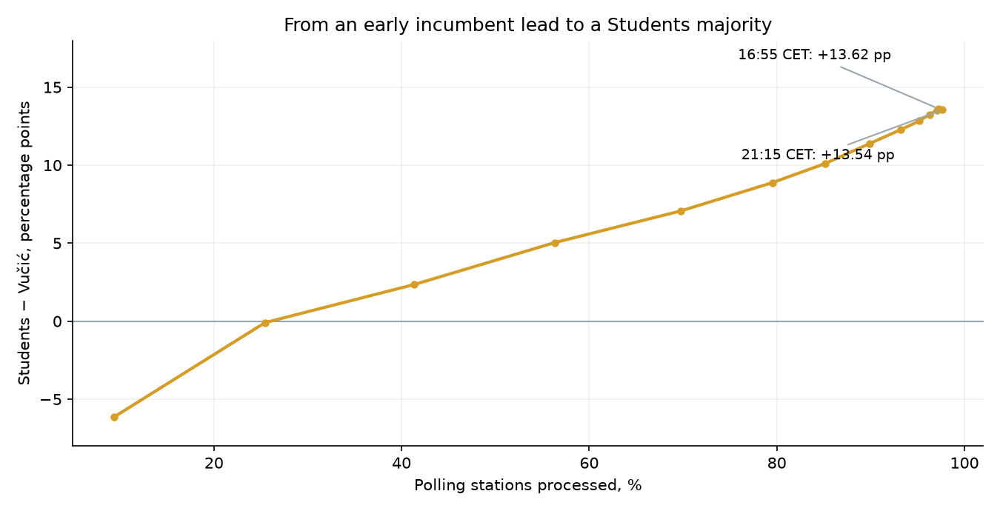
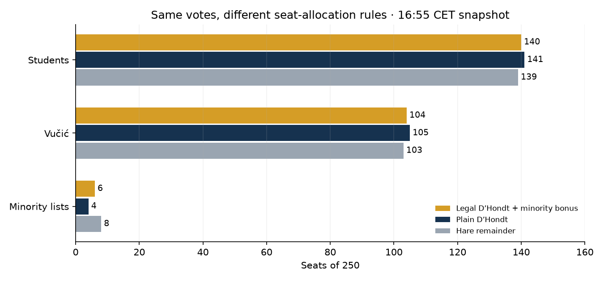
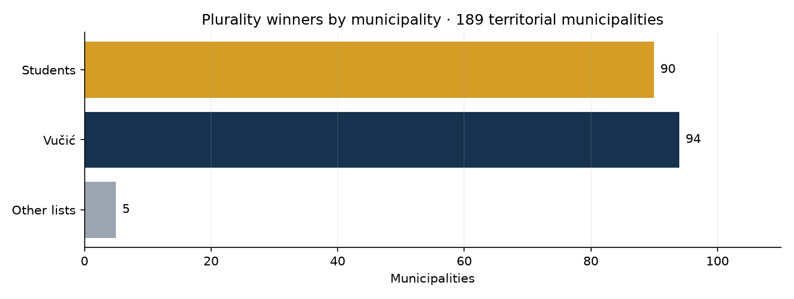
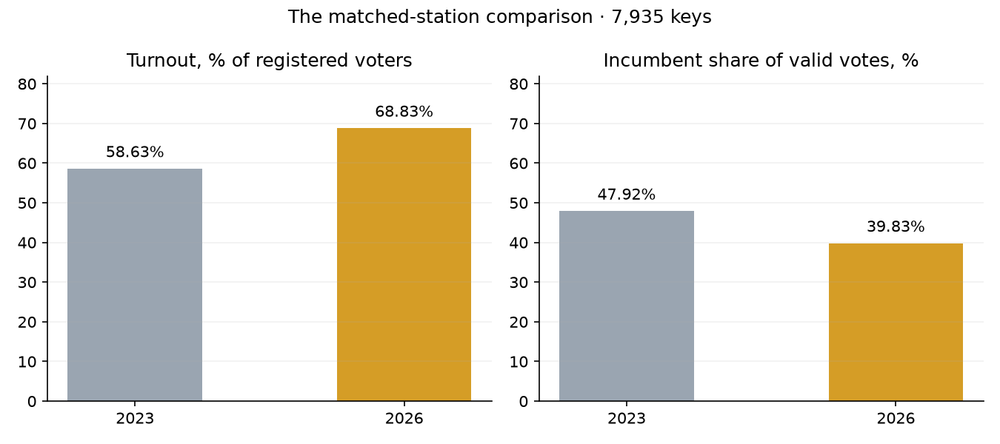

The lead in Serbia’s published count changed. What can these checks establish?
!
The screening does not establish ballot stuffing; open findings need review
I screened 8,124 processed territorial stations and 189 municipalities from the 16:55 CET snapshot. The 2023 results provide a historical reference, including 7,935 matching station keys. List totals reconcile with the corresponding published totals, but voter/ballot accounting gaps, digit deviations and unusual stations remain unresolved. These checks do not measure how much manipulation could have gone undetected or certify election integrity.
⇄
A projected seat majority and a different municipality tally
Holding the captured votes fixed, the 16:55 model projects 140 Students / 104 Vučić-list / 6 minority seats. Vučić’s list leads in 94 municipalities, Students in 90. Counting municipalities equally gives a different ranking because their electorates differ in size. Neither result is a certified final outcome.
i
The result in context
The latest captured national table and the earlier reconciled analysis use different endpoints.
97.60% of stations · 21:15 CET
97.24% processed · 16:55 CET analysis
8,273 historical stations · 2023
The election is for a 250-seat National Assembly, with voters choosing lists rather than electing a president. “Vučić” below abbreviates the list bearing his name. Serbia uses one national constituency, D’Hondt allocation, a 3% threshold and minority-list provisions. Results and seat estimates here are interim. The latest captured national table is from 21:15 CET; station tests and seat models use the separate 16:55 CET snapshot.
Latest archived national table · 26 October, 21:15 CET
8,191 of 8,392 stations processed · 4,248,886 valid ballots
Students
52.71%
Vučić
39.17%
SPS
2.17%
Other lists
4.66%
Invalid ballots
1.29%
The bars show shares of valid + invalid ballots, not turnout or shares of valid votes. Students have 53.40% of valid votes in this snapshot. Reported turnout is 68.83% among the registers of processed stations, not the whole national register. Station tests and seat models use 16:55 CET, when 97.24% of all stations were processed. “Latest” refers to this archive, not a live check of today’s portal. Other lists total 200,649 votes (4.66%); invalid ballots are shown separately: 55,500 (1.29%). The combined other-list share is calculated from vote counts, rather than summing rounded list percentages.
i
Three findings to keep in view
A change in the published lead, a seat-model sensitivity check and unresolved accounting.
1
The early published results covered a different set of stations
Vučić’s list led by 6.13 points when results covered 9.38% of stations. Students first lead in the saved snapshots between 25.45% and 41.35% station coverage. Belgrade’s initial coverage was about 2.9%. Changing geographic coverage could contribute to the reversal; this is not a causal decomposition or proof that counting procedures were sound.
2
A projected majority under each tested allocation rule
Using the same captured 16:55 votes and eligibility set, the tested models give Students 139–141 of 250 seats, including 140 with the statutory minority-quotient bonus. This varies the allocation rules, not outstanding votes, recounts or later corrections; it does not predict every possible final result.
3
Consistency is only part of an audit
All 18 list totals reconcile across the captured national and territorial aggregates after separately accounting for prisons and abroad. At 16:55, reported voters nevertheless exceed valid + invalid ballots by 2,650, with nonzero gaps at 565 stations. Arithmetic agreement between published tables cannot verify the underlying ballots or explain this discrepancy.
i
How the lead changed through the count
14 saved snapshots show an early change in the lead, a peak margin of 13.62 points and a later narrowing.
In the 22:04 CET capture on election night (source stamp 22:00), Vučić’s list led 48.01% to 41.88% on the portal’s valid-plus-invalid denominator. Students first appear ahead in the 00:08 snapshot; the previous capture is 23:07. This bounds the first observed change in the saved series, not necessarily the precise first crossover in the live count. Their margin reaches 13.62 points at 16:55 and is 13.54 at 21:15. The joined points do not reconstruct events between captures, and changes can include corrections.

Students minus Vučić-list displayed share, against the percentage of all stations processed. This is station coverage, not the percentage of votes counted. Markers are saved observations; the connecting line interpolates between them. The first observed lead change is bounded by 25.45–41.35% coverage.
Abroad and prisons need their own denominators
In the archived 21:15 table, abroad has results from 8/93 stations. Students have 89.57% of valid + invalid ballots in those eight stations. Reported voters are 80.06% of their covered register, or 11.91% of the full abroad register; the latter is incomplete participation, not final turnout. Prisons have results from 28/29 stations: reported turnout is 89.24% of the covered register and Vučić’s list has 65.61% of valid + invalid ballots. Both registers are excluded from territorial screening. Eight abroad stations cannot establish the preferences of the unprocessed diaspora.
i
What the electoral rules change
The minority-quotient bonus changes projected seats; Students retain a majority under the tested fixed-vote models.
The model applies a 3% threshold using reported voters as its denominator. It exempts the nine lists identified as national-minority lists and increases their D’Hondt quotients by 35% when they are below 3%, following Article 140. This increases allocation weights, not recorded votes. At 16:55, 171,010 valid votes (4.04% of all valid votes) went to non-minority lists below the modelled threshold, including SPS’s 92,761 votes. The published voter/ballot discrepancy is retained; the seat calculation is a model, not an official award.

Interim 16:55 votes held fixed. The model using statutory D’Hondt and minority weighting gives 140 Students, 104 Vučić-list and six minority seats. Plain D’Hondt removes the bonus; Hare removes it and changes the allocation method. All variants retain the same national eligibility set. These are model comparisons, not final mandates or simulations of uncounted votes.
Counting municipalities and counting votes answer different questions
At 16:55, Students have the largest list vote in 90 territorial municipalities, Vučić’s list in 94, and other lists in five. Students have 53.37% of territorial valid votes overall. Neither list leads in a majority of the 189 municipalities. This tally counts each municipality once, regardless of population. A separate regional seat model gives the same 140/104/six totals: it apportions seats by captured valid votes, applies the national eligibility set and then D’Hondt with minority weighting within regions. It does not test other boundaries or population-based regional apportionment.

Counts of municipalities by the list with the most reported votes at 16:55; this bar chart is not a geographic map or a tally of equally sized constituencies. National seat allocation counts votes, not municipal victories.
An analyst-defined grouping of seven 2023 non-incumbent lists has 39.49% of valid votes. Students, NDSS and European Serbia together have 54.63% in the 2026 snapshot; Students alone have 53.44%. These are different groupings in different elections, not a tracked bloc or evidence that the same voters moved together. Aggregate totals do not identify individual transfers or the causal effect of consolidation.
Statistical checks · the reconciled 16:55 snapshot
The station charts below use the 16:55 territorial dataset, excluding prisons and abroad. The 2023 data set the Shpilkin turnout cutoff and are analysed separately for comparison; they are not inputs to every 2026 test. The density figure explicitly shows separate year/list panels. Detailed diagnostic labels remain English in both page languages. Each section states what is observed, what is simulated or fitted, and what cannot be inferred.
i
High-turnout tail · Shpilkin-style diagnostic
0.12% of Students’ captured votes lie above the historical cutoff; 0.31% above the current-data cutoff.
The reference cutoff is the registered-elector-weighted 99.5th percentile of turnout across the 2023 territorial stations: 87.97%. The blue distributions show 2026 only; the dashed line is the cutoff derived from 2023, not a second distribution or an “honest turnout” boundary. In 0.5-point bins above that cutoff, there are 2,762 Students votes. Removing the whole tail would change Students’ share of reported voters from 52.65% to 52.77%. The same tail contains 8,670 Vučić-list votes (0.52%), with share changing 39.16% → 39.09%. At municipality level, the tail holds 4.29% of Students votes and removal changes their share by 0.07 points, using a different cutoff and register coverage. These are cutoff and aggregation sensitivities, not estimates of fabricated votes.
2026 territorial stations only: left, reported voters by turnout; right, Students votes by turnout. Red shading marks votes in bins above the historical cutoff. Only the cutoff comes from 2023; no 2023 distribution is overlaid. Tail votes have not been established as fraudulent.Open full-size figure ↗
i
Turnout versus vote share · scatter and correlations
Across 2026 territorial stations: weighted r = +0.497 for Students, −0.090 for Vučić’s list.
Each dot is a 2026 territorial station; the three panels show Students, Vučić’s list and SPS. Dot size scales with registered electors, with limits on marker size. List share means list votes divided by reported voters. The reported correlations also weight stations by registered electors: +0.497 for Students, −0.090 for Vučić’s list. Within several regions the incumbent relationship is positive despite the negative national value. Geography, station size and different electorates can contribute. Neither a positive nor a negative national correlation establishes the cause or rules out local manipulation. There are no 2023 observations in this scatter plot.
2026 turnout and list-share scatter plots. Each dot is a station; marker size reflects its registered electorate, within plotting limits. Both axes use reported-voter definitions. Correlation describes association, not a causal diagnosis.Open full-size figure ↗
!
Turnout–support density and a two-component fit
Two components are requested by the model; they are not two independently discovered or proven voter groups.
Each panel is fitted independently with two overlapping Gaussian components specified in advance. Registered-elector-weighted resampling is used in the fit. For 2026 Students, the fitted centres are (59.0% turnout, 34.7% list share) and (72.1%, 57.3%); the higher-turnout component has fitted weight 0.746. That weight is a model parameter, not a fraction of fraudulent votes or stations. The toolkit’s legacy “separated” flag requires higher turnout by more than two points, higher list share, and component weight above 1%. It is a directional screening rule, not a statistical test of cluster separation or a check that two components fit better than one. Students meet that rule. The Vučić-list fits in both years have lower support in their higher-turnout component, so they do not meet it. None of these fits identifies the cause or certifies either year as clean.
How to read the figure: horizontal position is turnout; vertical position is list votes divided by reported voters. Each coloured cell sums the registered electors of stations in that cell. Yellow means greater electorate density, on a logarithmic scale; it does not mean greater suspicion. A and B mark the fitted lower- and higher-turnout centres. The first two panels show 2026 Students and Vučić-list results; the third separately shows the 2023 Vučić-list reference. There is no 2023 Students list in these data.
Three separate year/list datasets, with common axis ranges and colour scale. Colours show registered-elector density; A/B mark fitted centres. Two components were imposed for each panel. The 2023 reference is explicitly shown in the third panel, not mixed into the 2026 observations.Open full-size figure ↗
i
Round-number percentages · integer peaks
Whole-number turnout: 2.14% of stations observed vs 2.02% simulated; z = +0.90.
The test counts station percentages that become whole numbers after rounding to two decimal places. A binomial simulation using each station’s size and observed turnout provides the reference (200 simulations). Observed whole-number turnout is 2.14%, compared with a simulated mean of 2.02%; z = +0.90 means about 0.9 simulated standard deviations above that mean. For multiples of five, z = −0.30. The separate Students-share test gives z = −3.48, a deficit of whole numbers, not the excess sought by this screen; the Vučić-list value is −1.46. The separately analysed 2023 turnout value is −0.88. These are model-relative diagnostics, not evidence that all other manipulation mechanisms are absent.
2026 only. Left: turnout histogram with red guide lines at multiples of five; those lines are not detected anomalies. Right: the observed fraction rounding to whole-number turnout and the binomial simulated mean, with an error bar of ±2 simulated standard deviations. No 2023 bars are shown.Open full-size figure ↗
!
Second-digit tests · Benford
SPS second digits differ from both reference models; the smaller unadjusted deviations do not survive the stated correction.
Second digits use station list counts of at least 10. The theoretical Benford p-values are 0.0498 for Students, 0.0146 for Vučić’s list and about 1.2×10⁻²⁶ for SPS. The fitted smooth-lognormal simulation gives 0.0399, 0.0200 and 0.00249 respectively. Using Bonferroni across the six list/digit combinations shown here gives a 5% cutoff of 0.00833; only SPS second digits cross it under either reference. This is an exploratory six-test family, not a correction across every analysis on the page. Of SPS’s 3,844 usable counts, 3,811 (99.14%) are in 10–99. A universal Benford model can be unsuitable for such a restricted range, and the fitted lognormal reference can also be misspecified. The SPS deviation remains a model-relative follow-up item, not proof of fabricated tallies. The Monte Carlo p = 0.00249 is the minimum resolution of 400 simulations (1/401), not a precisely measured fraud probability.
2026 second digits shown separately for Students, Vučić’s list and SPS, with each eligible sample size. Grey bars are the theoretical Benford reference; shading is a per-digit 95% simulation band from a fitted count model. It is not a joint acceptance band or a probability that the election is honest.Open full-size figure ↗
i
Last-digit tests
No 5% rejection for Students or Vučić’s list; SPS has too few ≥100 counts for reliable chi-square interpretation.
Last digits use station list counts of at least 100: 5,409 Students tallies and 5,891 Vučić-list tallies. Their theoretical uniformity p-values are 0.2175 and 0.1317; these do not reject at 5%, but do not establish honest counting. SPS has only 33 usable tallies: its chi-square approximation has expected counts of 3.3 per digit and is not treated as a reliable pass/fail result. The separately analysed 2023 NOS list has no counts reaching 100, so its last-digit test is unavailable. The three panels here contain 2026 data only; missing or underpowered tests cannot support a clean-election conclusion.
2026 last digits by list, restricted to counts ≥100. Grey bars show a uniform reference; shading is a per-digit smooth-model simulation band. The SPS panel is descriptive because only 33 counts survive. No 2023 observations are shown.Open full-size figure ↗
i
Local outliers and Isolation Forest
146 unusual 2026 stations within their municipalities; the 2023 comparison flags 136.
The robust within-municipality screen flags 146 of 8,124 stations (1.80%) in 2026 and 136 of 8,163 (1.67%) in 2023. A flag means |robust z| > 4 in turnout or Students share (2026), or incumbent share (2023). The comparison therefore uses different lists and is not a controlled estimate of an increase in fraud. These z-scores use the group median and median absolute deviation; they are not standard-normal significance scores. Small or homogeneous groups can yield large values. The chart shows only 2026 flags, using administrative peers rather than geographic nearest neighbours. A separate Isolation Forest flags 82 stations in each year with contamination set near 1%; that count largely follows the setting and is not an independent estimate of fraud.
2026 station turnout and Students-share robust z-scores within municipalities; red denotes the 146 flagged stations. These are administrative comparison groups, not measured geographic neighbours. Flagged names identify follow-up leads, not established fraud.Open full-size figure ↗
i
The 2023 historical reference and matching station keys
All 8,273 historical stations captured; 7,935 territorial keys match the 2026 dataset.
The 2023 archive has 8,163 territorial stations and 110 prison/abroad stations; all 18 list totals reconcile to the archived national result. Among the 7,935 matching territorial keys, aggregate turnout rises from 58.63% to 68.83%, and the incumbent list’s share of valid votes falls from 47.92% to 39.83%. These bars use sums of voters, registered electors and valid votes within the matched set, not an average giving every station equal weight. A matching key does not establish unchanged boundaries, the same electorate or individual vote transfers. The 2023 election is a historical reference, not an independently verified clean benchmark.

Actual 2023 and 2026 observations on the 7,935 matching territorial keys. Left: total reported voters / total registered electors. Right: incumbent-list votes / total valid votes. This comparison uses valid-vote shares, unlike the reported-voter denominator in the forensic scatter plots.
i
Synthetic sensitivity check
A specified synthetic addition increases the fixed-cutoff tail statistic about 31-fold; this is a sensitivity demonstration.
The synthetic scenario selects roughly 10% of stations for added voters and gives Students 87,179 additional simulated votes. The cutoff stays fixed at 85.95%, the original 2026 data’s own percentile, rather than the 87.97% historical cutoff used in the first chart. The tail statistic rises from 6,974 to 217,414 votes (31.17×). It counts existing votes moved into the tail as well as newly added votes, so it is not an estimator of how many votes were added. In a separate rounding scenario, the simulated turnout z changes from +0.90 to +3.23; that scenario is not shown in this figure. These examples test response to specified interventions, not false-positive rates, detection of every fraud mechanism, or the integrity of the original data.
Original 2026 observations and the synthetic addition scenario; “original” does not mean verified clean. The hatched bar is the 87,179 simulated Students votes added; the solid bars count all Students votes above the fixed original-data cutoff. Their different sizes show why tail mass is not a fraud-total estimate. No 2023 observations are used here.Open full-size figure ↗
i
What this analysis cannot establish
Interim published totals are evidence about the count, not a complete election audit.
The 16:55 snapshot has 8,160 of 8,392 stations processed (97.24%); screening uses 8,124 territorial stations after excluding 36 processed prison/abroad stations. The national trend archive reaches 8,191/8,392 (97.60%) at 21:15. These are percentages of stations, not votes. Outstanding results and later corrections can change the outcome; this page is not a live feed.
Reported voters exceed valid + invalid ballots by 2,650 in the 16:55 snapshot and 2,656 at 21:15. These values are preserved, not assigned to fraud or silently added to invalid ballots. Neither agreement between list totals nor failure to reject a statistical null explains the discrepancy.
No ballot papers, physical station protocols, voter-register quality, coercion, vote buying, campaign conditions or chain of custody were audited. Statistical consistency cannot certify that an election was free and fair.
Municipality registers include unprocessed stations; station-screening registers include only processed stations. Forensic list shares use reported voters; portal bars use valid + invalid ballots; seat models and explicitly labelled comparisons also report valid-vote shares. Model fits, reference cutoffs and digit p-values depend on assumptions. A test that does not flag a pattern is not evidence that manipulation of other forms or sizes is absent.
i
Sources, downloads and reproduction
Archived RIK counts, a historical reference and inspectable model outputs.
Source: the Republic Electoral Commission (RIK) results portal, election IDs 680072 (2026) and 341140 (2023), archived through its JSON API. The last national source stamp in this archive is 26 October 2026, 21:15 CET. Wording and charts reviewed 27 October; that review did not refresh the source observations.
Reproduce locally: zsh analysis-tool/run_forensics_serbia.sh. Page figures: analysis-tool/.venv/bin/python serbia-oct-2026/scripts/build_site_figures.py. Source code: elections-fraud repository. Raw captures are retained locally and are not bundled into this page.